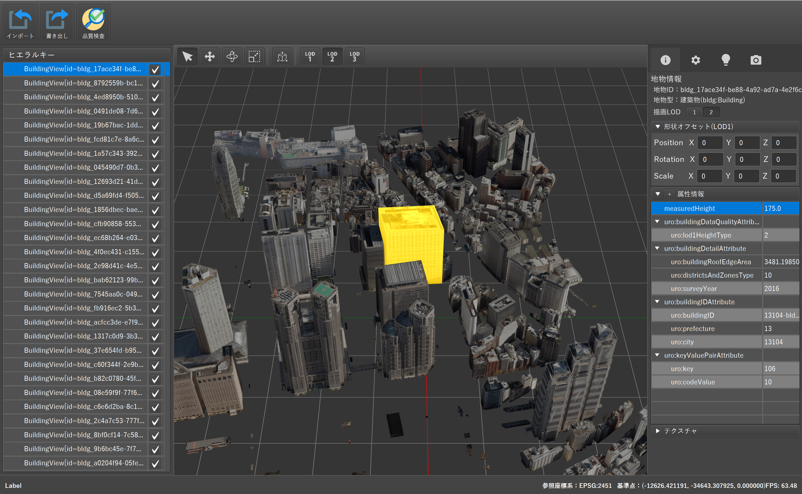

PLATEAU Builderについて

PLATEAU Builder は、国土交通省の「PLATEAU」プロジェクトにおける 3D都市モデルの標準仕様(PLATEAU標準製品仕様書 第4.0版) に準拠した CityGML データを、簡易かつ効率的に 編集・品質検査・出力 するためのソフトウェアです。
本ツールは、測量会社や GIS 専門家のみならず、多様な分野のユーザが、直感的に 3D都市モデルを扱えるよう設計されています。オープンソースで公開されているため、個人や専門ベンダーも無料かつ自由に改良や活用が可能です。
主な特徴
形状編集
CityGML の建築物や道路などの地物に対して、DCCツールを併用した形状編集が行えます。属性編集
主題属性や空間属性などを直感的なGUIで追加・修正可能です。大量の編集が必要な場合は、CSV を用いた一括編集にも対応しています。品質検査
PLATEAU の標準仕様に基づいた品質検査を行い、問題箇所をハイライト表示して修正を促します。データセット出力 (CityGML)
編集・検査を終えたモデルを、標準仕様に準拠したデータセット構成でエクスポート可能です。オープンソースかつ簡易な GUI
GitHub上でソースコードが公開されており、誰でも改変・再配布が可能です。GUIが用意されているため、測量 / GIS の専門でない方でも扱いやすい設計です。
ソースコード / ダウンロード
- ソースコード: GitHub (Project-PLATEAU/PLATEAU-Builder)
- ダウンロード: GitHub リポジトリの Releases ページから最新版を入手
本ドキュメントでは、PLATEAU Builder の 使い方や詳細な機能解説 をページごとにまとめています。初めてお使いになる方は、まず「クイックスタート」をご覧ください。